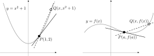

Derivatives (1/2)
Introduction to Engineering Mathematics
Motivation and definition
Why derivatives?
In short: tangent lines
In the previous class, we managed to compute the slope of the tangent line to the parabola \(y = x^2\) by computing the limit \[ m = \lim_{x \to 1} \frac{x^2 - 1}{x - 1} = 2. \]
How would we do this for an arbitrary curve \(y = f(x)\)?

Derivative of a function
We define the derivative of \(f(x)\) at \(x = a\) (“f prime”) as \[ f'(a) = \lim_{x \to a} \frac{f(x) - f(a)}{x - a} \quad \text{(if the limit exists)}. \]
If we put \(h = x - a\), we can rewrite this as \[ f'(a) = \lim_{h \to 0} \frac{f(a + h) - f(a)}{h}. \] This is sometimes easier to compute.
If \(f'(a)\) exists, we say that \(f(x)\) is differentiable at \(x = a\).
Examples
Compute the derivative of \(f(x) = 3x^2 + 7x - 5\) at \(x = 1\).
Examples
Compute the derivative of \(f(x) = |x|\) at \(x = a\).
The derivative as a function
By letting \(a\) vary in \(f'(a)\), we obtain a function given by \[ f'(x) = \lim_{h \to 0} \frac{f(x + h) - f(x)}{h} \quad \text{(if the limit exists)}. \]
There are many notations for the derivative function: for \(y = f(x)\), \[ f'(x) = y' = \frac{d f}{d x} = \frac{d y}{d x} = \frac{d}{dx} f(x). \] all mean the same thing.
Example
Show that \(\displaystyle \frac{d}{dx} \sqrt{x} = \frac{1}{2\sqrt{x}}\).
Properties of differentiable functions
We say that \(y = f(x)\) is differentiable on an interval \([a, b]\) if
- \(f'(x)\) exists for each \(x \in (a, b)\)
- At \(x = a\), the right derivative exists: \[f'(a) = \lim_{h \to 0+}\frac{f(a + h) - f(a)}{h}.\]
- At \(x = b\), the left derivative exists: \[f'(b) = \lim_{h \to 0-}\frac{f(b + h) - f(b)}{h}.\]
Link between differentiability and continuity
- If \(f(x)\) is differentiable at \(x = a\), then \(f(x)\) is also continuous at \(x = a\).
- The converse is not necessarily true!
Example: Show that \(y = |x|\) is differentiable for all \(x \ne 0\).
Higher-order derivatives
Now that we can take the derivative of a function, we can take the derivative of the derivative, and so on…
| Notation | Name |
|---|---|
| \(f'(x)\) | 1st-order derivative |
| \(f''(x) = \frac{d}{dx} f'(x)\) | 2nd-order derivative |
| … | … |
| \(f^{(n)}(x) = \frac{d}{dx} f^{(n-1)}(x)\) | \(n\)th-order derivative |
Derivatives of simple functions
Derivative of a polynomial: basic rules
- \[ \frac{d}{dx} c = 0 \]
- \[ \frac{d x^n}{dx} = nx^{n-1} \quad \text{for $n \ne 0$} \]
Derivative of a polynomial: basic rules
- \[ \frac{d}{dx}(cf(x)) = c\frac{d f}{dx} \]
- \[ \frac{d}{dx}(f(x) + g(x)) = \frac{d f}{dx} + \frac{dg}{dx} \]
Examples
Compute the derivative of \(f(x) = 3x^2 + 7x - 5\).
Derivative of the exponential/logarithm
\[\begin{align*} \frac{d}{dx} e^x & = e^x \\ \frac{d}{dx} \ln x & = \frac{1}{x}. \end{align*}\]
For a different base: \[\begin{align*} \frac{d}{dx} a^x & = a^x \ln a \\ \frac{d}{dx} \log_a x & = \frac{1}{x \ln a} \end{align*}\]
- The last two rules will follow from the chain rule
- Do not confuse the rules for \(a^x\) and \(x^n\)!
Product and quotient rules
\[\begin{align*} \frac{d}{dx}(f(x)g(x)) & = f'(x) g(x) + f(x) g'(x) \\ \frac{d}{dx} \frac{f(x)}{g(x)} & = \frac{f'(x) g(x) - f(x) g'(x)}{g(x)^2} \end{align*}\]
Examples: Compute
- \(\displaystyle \frac{d}{dx}(x^2 e^x)\)
- \(\displaystyle \frac{d}{dx} \frac{x + 1}{x + 3}\)
Derivatives of trigonometric functions
\[\begin{align*} \frac{d}{dx} \sin x & = \cos x \\ \frac{d}{dx} \cos x & = - \sin x \\ \frac{d}{dx} \tan x & = \frac{1}{\cos^2 x} \end{align*}\]
Examples
Using the rules from the previous slide, show that
\[\begin{align*} \frac{d}{dx} \csc x & = - \cot x \csc x \\ \frac{d}{dx} \sec x & = \tan x \sec x \\ \frac{d}{dx} \cot x & = - \csc^2 x \end{align*}\]
Example solution: \[ \frac{d}{dx} \csc x = \frac{d}{dx} \frac{1}{\sin x} = \frac{1'\cdot \sin x - \sin'(x) \cdot 1}{\sin^2 x} = - \frac{\cos x}{\sin^2 x}. \] (This will be easier once we cover the chain rule)
Derivatives of inverse trigonometric functions
\[\begin{align*} \frac{d}{dx} \arcsin x & = \frac{1}{\sqrt{1 - x^2}} \\ \frac{d}{dx} \arccos x & = \frac{-1}{\sqrt{1 - x^2}} \\ \frac{d}{dx} \arctan x & = \frac{1}{1 + x^2} \\ \end{align*}\]
These rules can be derived by means of implicit differentation, which we will cover later.
The chain rule
The chain rule
- Useful for composite functions \(F = \red{f} \circ \blue{g}\) (“\(\red{f}\) after \(\blue{g}\)”)
- If \(\red{f}(x)\) and \(\blue{g}(x)\) are differentiable, then the composite function \(F(x)\) is also differentiable and \[ F'(x) = \red{f'}(\blue{g}(x)) \cdot \blue{g'}(x). \]
Example
Compute \(\displaystyle \frac{d}{dx} e^{\sqrt{\cos x}}\).
Example
Compute \(\displaystyle \frac{d}{dx} x^{\sin(x)}\).